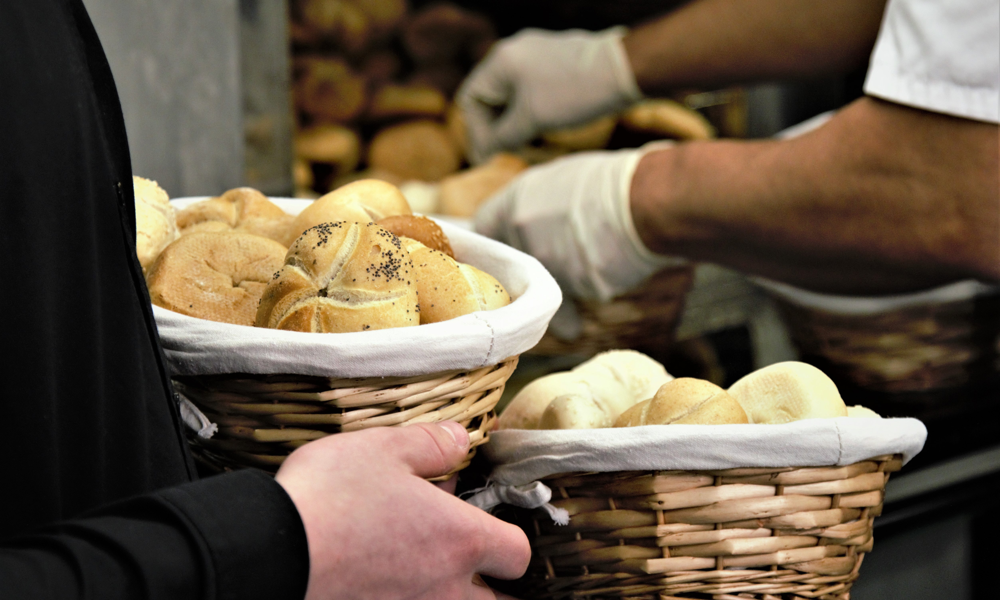
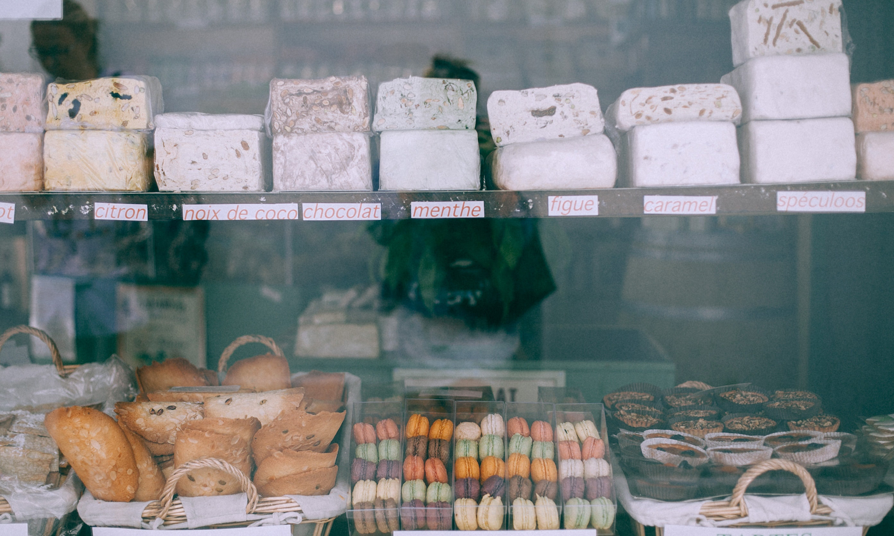

<div class="container">
    <div class="row">
        <h1 style="color: orangered;">Giới thiệu</h1>
        <p style="font-size: 18px;"> 
            Với tiêu chí “QUAN TÂM ĐẾN SỨC KHỎE CỦA BẠN”, Sweet đã nghiên cứu thành công kỹ thuật bổ sung các nguồn dinh dưỡng, Vitamin và
            các khoáng chất vào trong sản phẩm mà vẫn giữ được bản chất truyền thống của từng chiếc bánh.
            Nghệ thuật trong việc chế biến đã được Công ty tập trung nghiên cứu cải tiến. Sản phẩm đến tay
            người tiêu dùng là phải hội đủ các yếu tố như đảm bảo độ thẩm mỹ, chất lượng, an toàn vệ sinh, giá trị dinh dưỡng… Hiện tại, 
            Chúng tôi cung cấp hơn 70 mẫu mã của các dòng bánh mỳ và bánh ngọt đã được công ty đầu tư từ công nghệ đến công thức chế biến.
        </p>
        <h3 style="color: grey;">Một số hình ảnh của quán</h3>
        
        <div class="col-xs-6 col-sm-6 col-md-6 col-lg-6">
            
        </div>
        <div class="col-xs-6 col-sm-6 col-md-6 col-lg-6">
            
        </div>
        
    </div>
</div>